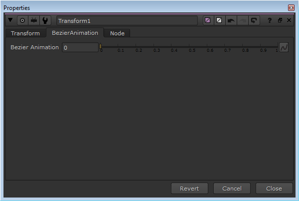

Description:
Link to Roto Bezier is a script for path animation.
Operation:
•Draw a Bezier shape with Roto node which will be used as path.
•Create a Translate node which will animate along path.
•Click on Translate node's translate knob's animation menu, and click on Link to Roto Bezier.
•A panel will appear such as follows asking to select a Roto node and to select one of it's Bezier shape.

•Select Roto node and Bezier shape and click on OK.
•Now translate knob will get linked to Roto node's Bezier shape. And your Translate node node will get a new BezierAnimation tab with a Bezier Animation slider such as follows.

•0 is starting point of path and 1 is ending point of path.
Special Note:
If you have Bezier shape inside a layer group, then it will not show up for selection.